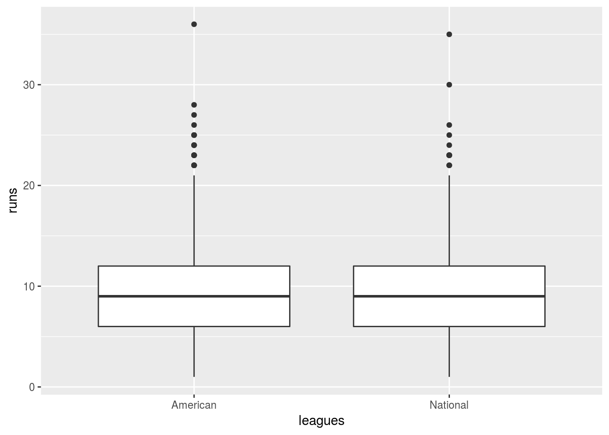

The Designated Hitter
Back in 1973, when the American League introduced the Designated Hitter rule, they were worried (among other things) about their league having fewer runs per game than the rival National League. So they introduced a rule whereby the pitcher (or any other nominated player) no longer had to bat, to be replaced by a player, the Designated Hitter, whose only job was to bat. Did that have the desired effect of increasing the total number of runs scored, compared to the National League, which has never had a Designated Hitter?
I was working on an assignment for my students based on this idea, using data from the 2008 season. The data I had, though, was aggregated by team. Since 1997 or so, Major League Baseball has had “interleague play”, whereby a smallish number of games is played between teams in the American League and teams in the National League. For example, the Toronto Blue Jays (American League) might play a series against the New York Mets (National League). Whether or not there is a Designated Hitter depends on which team is playing at home: if the Jays are at home, there is a Designated Hitter, and if the Mets are at home, there is not. This means that looking only at teams is misleading, because each team will play some games where the Designated Hitter rule is opposite to what that team’s league would indicate: not all the Jays’ games had a Designated Hitter, and some of the Mets’ games did have one.
So I thought that I should look at this game by game, to get a clearer picture. This post is mostly the story of how I organized the data, with a tiny bit of statistics on the end.
I found the whole 2008 season’s results here. To extract what I wanted, I would have to handle the HTML, and even when I had the text displayed on that web page, I would have to organize it. This means using rvest to “scrape” the HTML, as well as stringr to handle the text. The latter is installed with the tidyverse but has to be loaded separately.
All right, down to business:
library(tidyverse)## Loading tidyverse: ggplot2
## Loading tidyverse: tibble
## Loading tidyverse: tidyr
## Loading tidyverse: readr
## Loading tidyverse: purrr
## Loading tidyverse: dplyr## Conflicts with tidy packages ----------------------------------------------## filter(): dplyr, stats
## lag(): dplyr, statslibrary(rvest)## Loading required package: xml2##
## Attaching package: 'rvest'## The following object is masked from 'package:readr':
##
## guess_encodinglibrary(stringr)
res2008=read_html("http://www.baseball-reference.com/leagues/MLB/2008-schedule.shtml")
res2008## {xml_document}
## <html data-version="klecko-" data-root="/home/br/build" itemscope="" itemtype="http://schema.org/WebSite" lang="en" class="no-js">
## [1] <head>\n<meta http-equiv="Content-Type" content="text/html; charset= ...
## [2] <body class="br">\n\n<div id="wrap">\n <div id="header" role="banne ...So now we have to go inside the HTML and pull out the text that contains the teams and scores. A surreptitious peek at the HTML reveals that each game is enclosed in a <p> “paragraph” tag. The “paragraphs” can be extracted into a vector like this:
paragraphs=res2008 %>% html_nodes("p")
paragraphs## {xml_nodeset (2703)}
## [1] <p><a href="http://www.sportslogos.net/">via Sports Logos.net</a></p>
## [2] <p><a href="http://www.sports-reference.com/blog/2016/06/redesign-t ...
## [3] <p><strong>World Series Champion</strong>: <a href="/teams/PHI/2008 ...
## [4] <p><a href="/register/league.cgi?year=2008">Minor Leagues</a></p>
## [5] <p><a href="/leagues/MLB/2008-standings.shtml">Standings</a></p>
## [6] <p><a href="/leagues/MLB/2008-schedule.shtml">Schedule</a></p>
## [7] <p><a href="/leagues/MLB/2008-standard-fielding.shtml">Fielding</a> ...
## [8] <p><a href="/leagues/MLB/2008-standard-batting.shtml">Batting</a></p>
## [9] <p><a href="/leagues/MLB/2008-standard-pitching.shtml">Pitching</a> ...
## [10] <p class="listhead">Fielding</p>
## [11] <p class="listhead">Batting</p>
## [12] <p class="listhead">Pitching</p>
## [13] <p class="listhead">Leaders & Awards</p>
## [14] <p class="listhead">Other</p>
## [15] <p class="game">\n \n \n <strong> <a href="/teams/BOS/2008.shtml">B ...
## [16] <p> » <a href="/boxes/?date=2008-03-25">2008-03-25 Standings &am ...
## [17] <p class="game">\n \n \n <a href="/teams/BOS/2008.shtml">Boston Re ...
## [18] <p> » <a href="/boxes/?date=2008-03-26">2008-03-26 Standings &am ...
## [19] <p class="game">\n \n \n <a href="/teams/ATL/2008.shtml">Atlanta B ...
## [20] <p> » <a href="/boxes/?date=2008-03-30">2008-03-30 Standings &am ...
## ...This contains some extra stuff that we don’t want, but lines 15, 17 and 19 suggest that what we actually do need is the lines where the class attribute is equal to game. Further surreptitious study of the HTML reveals that all the other information we need is in the text inside each “paragraph”; we don’t need to worry about any of the hyperlinks.
With that in mind, let’s extract from the paragraphs two things: the text, and the class attribute (these functions come from rvest):
classes=paragraphs %>% html_attr("class")
classes[1:20]## [1] NA NA NA NA NA NA
## [7] NA NA NA "listhead" "listhead" "listhead"
## [13] "listhead" "listhead" "game" NA "game" NA
## [19] "game" NAtexts=paragraphs %>% html_text()
texts[1:20]## [1] "via Sports Logos.net"
## [2] "About logos"
## [3] "World Series Champion: Philadelphia Phillies"
## [4] "Minor Leagues"
## [5] "Standings"
## [6] "Schedule"
## [7] "Fielding"
## [8] "Batting"
## [9] "Pitching"
## [10] "Fielding"
## [11] "Batting"
## [12] "Pitching"
## [13] "Leaders & Awards"
## [14] "Other"
## [15] "\n \n \n Boston Red Sox\n (6)\n @\n Oakland Athletics\n (5)\n Boxscore\n "
## [16] " » 2008-03-25 Standings & Scores"
## [17] "\n \n \n Boston Red Sox\n (1)\n @\n Oakland Athletics\n (5)\n Boxscore\n "
## [18] " » 2008-03-26 Standings & Scores"
## [19] "\n \n \n Atlanta Braves\n (2)\n @\n Washington Nationals\n (3)\n Boxscore\n "
## [20] " » 2008-03-30 Standings & Scores"Some of the classes are game, and for those, the teams and scores (and some extra newlines) are in texts.
Let’s make a data frame of these, so we can pull out the texts we want using filter:
d=tibble(txt=texts,cl=classes) %>%
filter(cl=="game")
d$txt[1:20]## [1] "\n \n \n Boston Red Sox\n (6)\n @\n Oakland Athletics\n (5)\n Boxscore\n "
## [2] "\n \n \n Boston Red Sox\n (1)\n @\n Oakland Athletics\n (5)\n Boxscore\n "
## [3] "\n \n \n Atlanta Braves\n (2)\n @\n Washington Nationals\n (3)\n Boxscore\n "
## [4] "\n \n \n Texas Rangers\n (2)\n @\n Seattle Mariners\n (5)\n Boxscore\n "
## [5] "\n \n \n LA Angels of Anaheim\n (2)\n @\n Minnesota Twins\n (3)\n Boxscore\n "
## [6] "\n \n \n Kansas City Royals\n (5)\n @\n Detroit Tigers\n (4)\n Boxscore\n "
## [7] "\n \n \n Chicago White Sox\n (8)\n @\n Cleveland Indians\n (10)\n Boxscore\n "
## [8] "\n \n \n Tampa Bay Rays\n (6)\n @\n Baltimore Orioles\n (2)\n Boxscore\n "
## [9] "\n \n \n Houston Astros\n (0)\n @\n San Diego Padres\n (4)\n Boxscore\n "
## [10] "\n \n \n Washington Nationals\n (11)\n @\n Philadelphia Phillies\n (6)\n Boxscore\n "
## [11] "\n \n \n Pittsburgh Pirates\n (12)\n @\n Atlanta Braves\n (11)\n Boxscore\n "
## [12] "\n \n \n Milwaukee Brewers\n (4)\n @\n Chicago Cubs\n (3)\n Boxscore\n "
## [13] "\n \n \n Arizona D'Backs\n (4)\n @\n Cincinnati Reds\n (2)\n Boxscore\n "
## [14] "\n \n \n New York Mets\n (7)\n @\n Florida Marlins\n (2)\n Boxscore\n "
## [15] "\n \n \n San Francisco Giants\n (0)\n @\n Los Angeles Dodgers\n (5)\n Boxscore\n "
## [16] "\n \n \n Texas Rangers\n (5)\n @\n Seattle Mariners\n (4)\n Boxscore\n "
## [17] "\n \n \n Boston Red Sox\n (2)\n @\n Oakland Athletics\n (1)\n Boxscore\n "
## [18] "\n \n \n Toronto Blue Jays\n (2)\n @\n New York Yankees\n (3)\n Boxscore\n "
## [19] "\n \n \n LA Angels of Anaheim\n (9)\n @\n Minnesota Twins\n (1)\n Boxscore\n "
## [20] "\n \n \n Colorado Rockies\n (2)\n @\n St. Louis Cardinals\n (1)\n Boxscore\n "Those all appear to be game scores. They have a lot of extra newlines in them, but if we’re lucky, there’ll be the same number of newlines in each one and this idea will work (from stringr):
m=str_split(d$txt,"\n",simplify=T)
m[1:10,]## [,1] [,2] [,3] [,4] [,5] [,6]
## [1,] "" " " " " " Boston Red Sox" " (6)" " @"
## [2,] "" " " " " " Boston Red Sox" " (1)" " @"
## [3,] "" " " " " " Atlanta Braves" " (2)" " @"
## [4,] "" " " " " " Texas Rangers" " (2)" " @"
## [5,] "" " " " " " LA Angels of Anaheim" " (2)" " @"
## [6,] "" " " " " " Kansas City Royals" " (5)" " @"
## [7,] "" " " " " " Chicago White Sox" " (8)" " @"
## [8,] "" " " " " " Tampa Bay Rays" " (6)" " @"
## [9,] "" " " " " " Houston Astros" " (0)" " @"
## [10,] "" " " " " " Washington Nationals" " (11)" " @"
## [,7] [,8] [,9] [,10]
## [1,] " Oakland Athletics" " (5)" " Boxscore" " "
## [2,] " Oakland Athletics" " (5)" " Boxscore" " "
## [3,] " Washington Nationals" " (3)" " Boxscore" " "
## [4,] " Seattle Mariners" " (5)" " Boxscore" " "
## [5,] " Minnesota Twins" " (3)" " Boxscore" " "
## [6,] " Detroit Tigers" " (4)" " Boxscore" " "
## [7,] " Cleveland Indians" " (10)" " Boxscore" " "
## [8,] " Baltimore Orioles" " (2)" " Boxscore" " "
## [9,] " San Diego Padres" " (4)" " Boxscore" " "
## [10,] " Philadelphia Phillies" " (6)" " Boxscore" " "It looks as if the newlines split each piece of text into exactly 10 pieces, which was a lucky break and saved us having to do anything more sophisticated. Also, the road team is in column 4, the home team in column 7, the road team’s score in column 5 and the home team’s score in column 8, so now we can pull these out of the matrix and into a new data frame.
Unfortunately, if you look carefully, the team names all have two extra spaces on the front, and since we are going to look them up later, we should get rid of those spaces now. trimws removes any leading or trailing whitespace, which is exactly what we want.
There’s one more thing: the scores are in brackets, which you might think would need some regular expression trickery to extract, but no: there is a handy function parse_number that extracts the numeric part of any text. Finally, we need to calculate the total number of runs in each game, and store all of that in a data frame:
scores=tibble(t1=trimws(m[,4]),
t2=trimws(m[,7]),
s1=parse_number(m[,5]),
s2=parse_number(m[,8]),
runs=s1+s2)
scores## # A tibble: 2,460 x 5
## t1 t2 s1 s2 runs
## <chr> <chr> <dbl> <dbl> <dbl>
## 1 Boston Red Sox Oakland Athletics 6 5 11
## 2 Boston Red Sox Oakland Athletics 1 5 6
## 3 Atlanta Braves Washington Nationals 2 3 5
## 4 Texas Rangers Seattle Mariners 2 5 7
## 5 LA Angels of Anaheim Minnesota Twins 2 3 5
## 6 Kansas City Royals Detroit Tigers 5 4 9
## 7 Chicago White Sox Cleveland Indians 8 10 18
## 8 Tampa Bay Rays Baltimore Orioles 6 2 8
## 9 Houston Astros San Diego Padres 0 4 4
## 10 Washington Nationals Philadelphia Phillies 11 6 17
## # ... with 2,450 more rowsSuccess!
Now, we turn our minds back to what we were trying to do: determine whether each game was played under American League rules (with a Designated Hitter) or National League rules (without). That depends on what league the home team plays in, the column t2 in our data frame scores. What we’ll do is to make a small data frame of all the (home) teams, and to that glue a designation of which league each one was in (in 2008). Then we can use the small data frame to look up each home team in scores and append a column with the right League.
Here are the unique (home) teams:
teams=unique(scores$t2)
teams## [1] "Oakland Athletics" "Washington Nationals"
## [3] "Seattle Mariners" "Minnesota Twins"
## [5] "Detroit Tigers" "Cleveland Indians"
## [7] "Baltimore Orioles" "San Diego Padres"
## [9] "Philadelphia Phillies" "Atlanta Braves"
## [11] "Chicago Cubs" "Cincinnati Reds"
## [13] "Florida Marlins" "Los Angeles Dodgers"
## [15] "New York Yankees" "St. Louis Cardinals"
## [17] "Toronto Blue Jays" "LA Angels of Anaheim"
## [19] "Colorado Rockies" "Milwaukee Brewers"
## [21] "Chicago White Sox" "San Francisco Giants"
## [23] "Pittsburgh Pirates" "Houston Astros"
## [25] "Arizona D'Backs" "Boston Red Sox"
## [27] "Kansas City Royals" "Tampa Bay Rays"
## [29] "Texas Rangers" "New York Mets"As you can check, these no longer have any leading whitespace.
I’m going to write these to a .csv file, add (manually) a second column with the leagues in, and then read it back in:
write_csv(tibble(teams),"teams.csv")OK, I’m back. I made a copy of that file before adding to it:
teams2=read_csv("teams2.csv")## Parsed with column specification:
## cols(
## teams = col_character(),
## leagues = col_character()
## )teams2## # A tibble: 30 x 2
## teams leagues
## <chr> <chr>
## 1 Oakland Athletics American
## 2 Washington Nationals National
## 3 Seattle Mariners American
## 4 Minnesota Twins American
## 5 Detroit Tigers American
## 6 Cleveland Indians American
## 7 Baltimore Orioles American
## 8 San Diego Padres National
## 9 Philadelphia Phillies National
## 10 Atlanta Braves National
## # ... with 20 more rowsThere’s supposed to be 16 National League teams and only 14 American League ones:
teams2 %>% count(leagues)## # A tibble: 2 x 2
## leagues n
## <chr> <int>
## 1 American 14
## 2 National 16so it looks as if I got the league memberships correct.
Now, the lookup. Database people call this a “join”, which is also the name of the idea in dplyr. I want to match the column called t2 in scores with the column called teams in teams2, which the by below does:
scores %>% left_join(teams2,by=c("t2"="teams"))## # A tibble: 2,460 x 6
## t1 t2 s1 s2 runs leagues
## <chr> <chr> <dbl> <dbl> <dbl> <chr>
## 1 Boston Red Sox Oakland Athletics 6 5 11 American
## 2 Boston Red Sox Oakland Athletics 1 5 6 American
## 3 Atlanta Braves Washington Nationals 2 3 5 National
## 4 Texas Rangers Seattle Mariners 2 5 7 American
## 5 LA Angels of Anaheim Minnesota Twins 2 3 5 American
## 6 Kansas City Royals Detroit Tigers 5 4 9 American
## 7 Chicago White Sox Cleveland Indians 8 10 18 American
## 8 Tampa Bay Rays Baltimore Orioles 6 2 8 American
## 9 Houston Astros San Diego Padres 0 4 4 National
## 10 Washington Nationals Philadelphia Phillies 11 6 17 National
## # ... with 2,450 more rowsIf you scroll across, you’ll see that each game has acquired the league membership of its home team, and you can eyeball these 10 to make sure that they are correct (they seem to be).
For our analysis, we only need the total number of runs in each game and the league membership of the home team, so let’s save only what we need:
byleague=scores %>% left_join(teams2,by=c("t2"="teams")) %>%
select(runs,leagues)
byleague## # A tibble: 2,460 x 2
## runs leagues
## <dbl> <chr>
## 1 11 American
## 2 6 American
## 3 5 National
## 4 7 American
## 5 5 American
## 6 9 American
## 7 18 American
## 8 8 American
## 9 4 National
## 10 17 National
## # ... with 2,450 more rowsA graphical comparison of runs by game for each league is most easily a boxplot:
ggplot(byleague,aes(x=leagues,y=runs))+geom_boxplot()
As you might expect, there were a few games with a lot of runs, so the distributions are skewed to the right. There appears to be not much difference between the medians, but that might just be the scale.
Also, were there really games with over 25 runs?
scores %>% filter(runs>25)## # A tibble: 7 x 5
## t1 t2 s1 s2 runs
## <chr> <chr> <dbl> <dbl> <dbl>
## 1 Florida Marlins Colorado Rockies 17 18 35
## 2 Los Angeles Dodgers Colorado Rockies 16 10 26
## 3 Detroit Tigers Cleveland Indians 14 12 26
## 4 Texas Rangers Boston Red Sox 17 19 36
## 5 Atlanta Braves Florida Marlins 16 14 30
## 6 LA Angels of Anaheim Texas Rangers 15 13 28
## 7 New York Yankees Boston Red Sox 19 8 27Those games are on the webpage with those scores, so they should be correct. There were actually six instances of a team scoring 19 runs in a game, some of which were scores like 19-3 or 19-6 that don’t show up here.
All right then, what were the medians and means by league, and how much data do we have?
byleague %>% group_by(leagues) %>%
summarize(n=n(),mean=mean(runs),median=median(runs))## # A tibble: 2 x 4
## leagues n mean median
## <chr> <int> <dbl> <dbl>
## 1 American 1151 9.485665 9
## 2 National 1309 9.119175 9The medians for both leagues are the same (which was why it was hard to see any difference on the boxplots), but the mean for the American League is slightly higher. Is that difference significant? Despite the skewness, I am going to go ahead and do a two-sample \(t\)-test because there is a lot of data. I’m using a one-sided test because the Designated Hitter rule means that there is an a priori reason for the American League mean to be bigger:
t.test(runs~leagues,data=byleague,alternative="greater")##
## Welch Two Sample t-test
##
## data: runs by leagues
## t = 1.9566, df = 2344, p-value = 0.02526
## alternative hypothesis: true difference in means is greater than 0
## 95 percent confidence interval:
## 0.05826695 Inf
## sample estimates:
## mean in group American mean in group National
## 9.485665 9.119175The P-value is less than 0.05, so we have enough evidence to say that the mean number of runs is higher in American League games. How much bigger? For that, we need a confidence interval, for which we have to do the test again two-sided:
t.test(runs~leagues,data=byleague)##
## Welch Two Sample t-test
##
## data: runs by leagues
## t = 1.9566, df = 2344, p-value = 0.05052
## alternative hypothesis: true difference in means is not equal to 0
## 95 percent confidence interval:
## -0.0008248803 0.7338042738
## sample estimates:
## mean in group American mean in group National
## 9.485665 9.119175The American League has somewhere between 0 and 0.73 runs per game more than the National League. Decide for yourself whether that’s a big enough difference to get excited about.